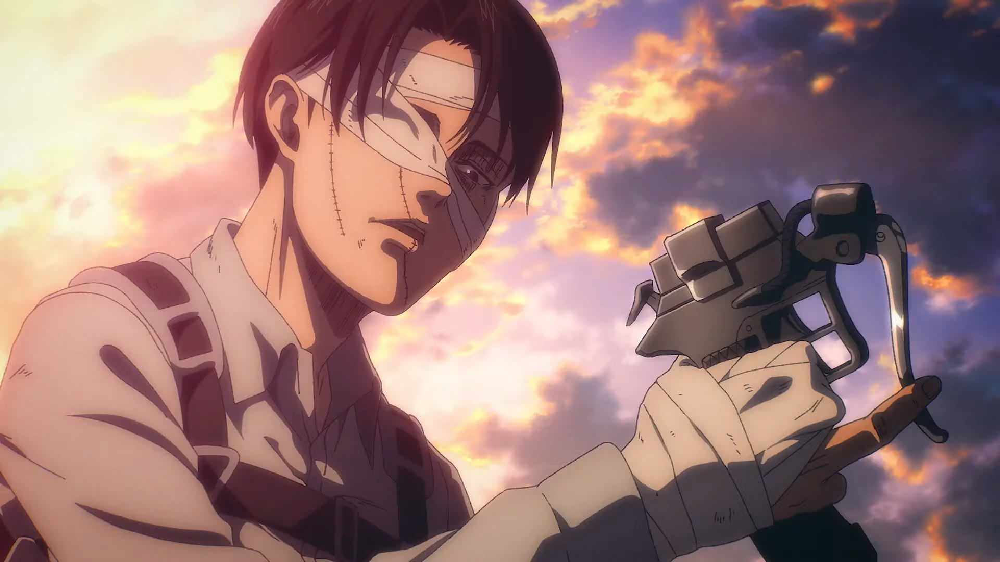
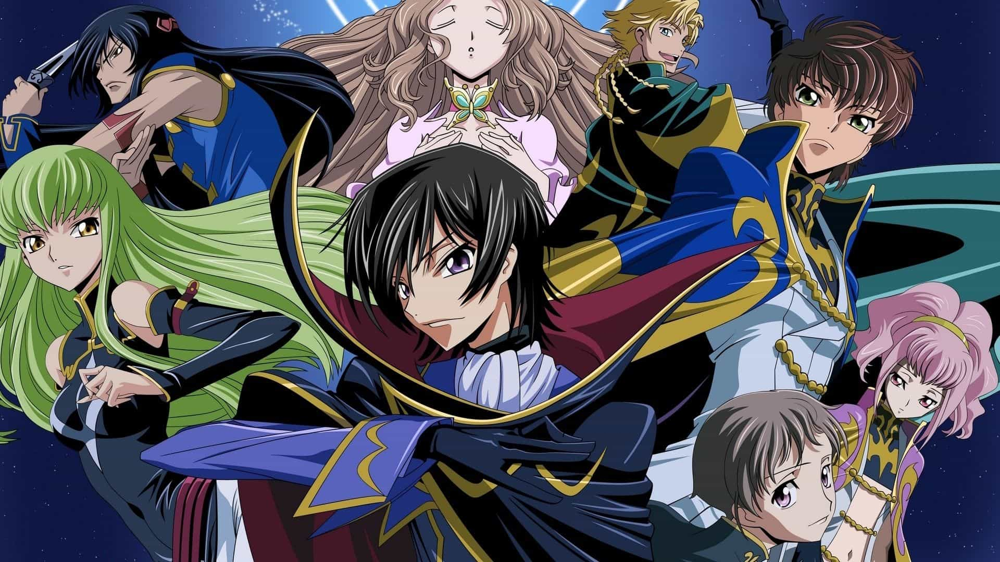
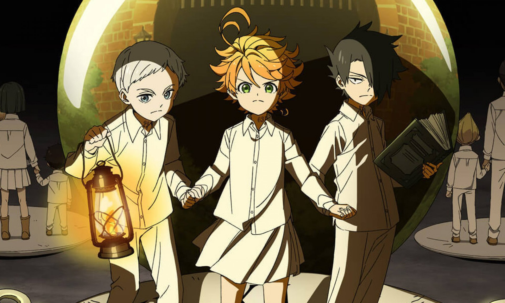
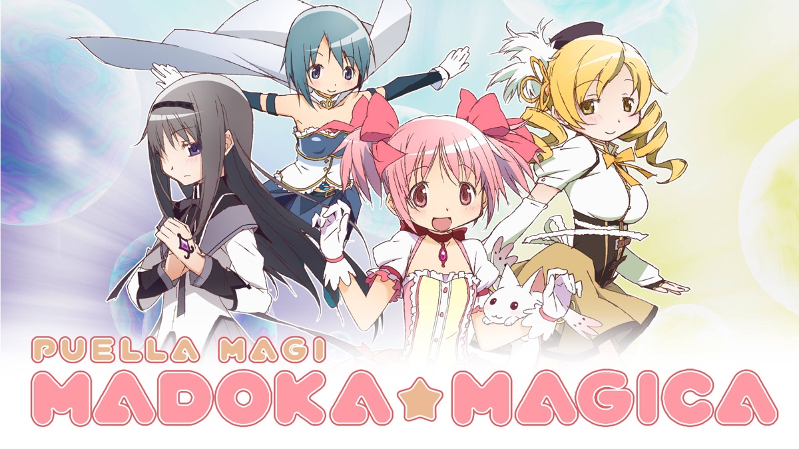
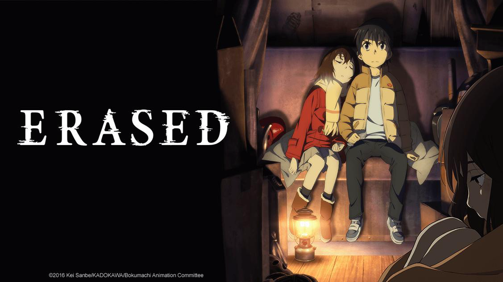
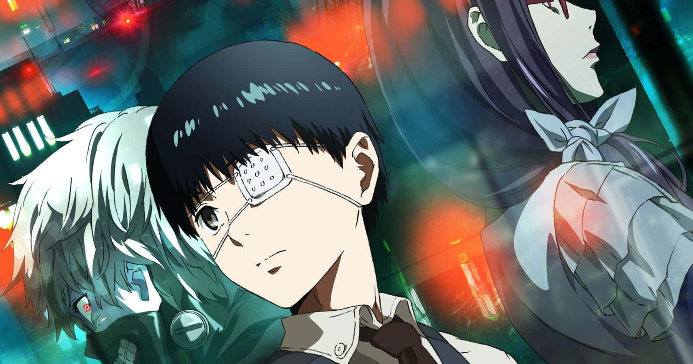
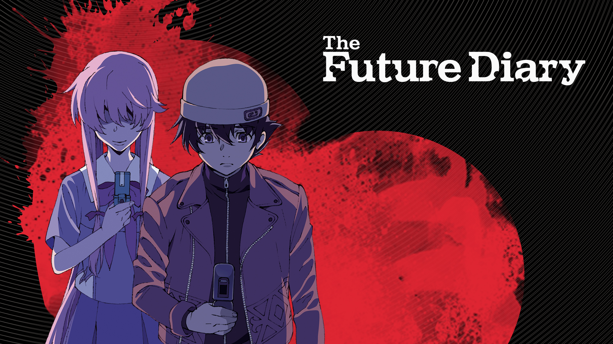
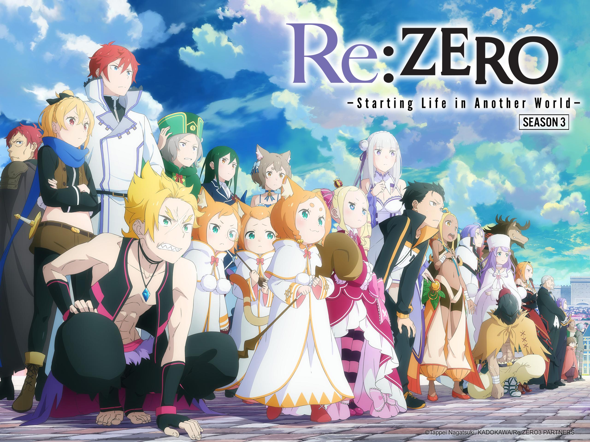
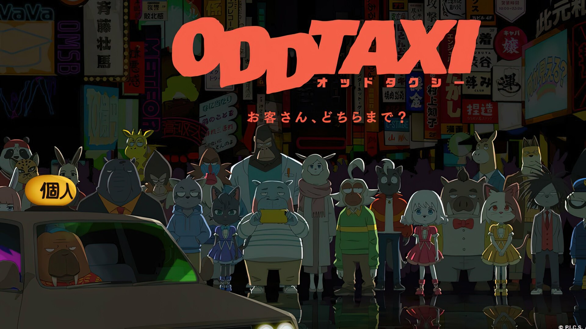

SMASH Senpai
Top 10 Anime With Insane Plot Twists (No Spoilers)
Some anime don’t just surprise you — they completely rewrite what you thought the story was. These plot twists aren’t cheap shocks. They change characters, themes, and the entire meaning of everything that came before.
This list contains Top 10 Anime With Insane Plot Twists, ranked without spoilers. If you like anime that mess with your expectations and leave you staring at the screen in silence, this list is for you.
These are not spoilers — just warnings. Once the twist hits, the anime is never the same again.
Sponsored
#1 Attack on Titan
Attack on Titan is the definition of an anime that reinvents itself through plot twists. What begins as a desperate fight for survival slowly evolves into a complex narrative about freedom, truth, and human nature. The early episodes establish a clear worldview, making viewers feel confident that they understand how this universe works.
As the story progresses, that sense of certainty is deliberately shattered. Information that once felt absolute is questioned, recontextualized, and eventually overturned. These twists are not sudden shocks — they are carefully planted long before they are revealed, making them feel both surprising and inevitable.
What makes Attack on Titan’s twists so effective is their scale. They don’t just affect individual characters; they completely alter the meaning of the story itself. Motivations change, alliances blur, and moral clarity disappears. Viewers are forced to confront uncomfortable questions about justice, violence, and the cost of freedom.
Each major revelation adds emotional weight rather than cheap surprise. Instead of explaining everything at once, the anime allows the audience to slowly realize the truth alongside the characters. By the time the full picture emerges, the story feels unrecognizable from where it began — in the best possible way.

play anime smash or pass here (not sponsored)
SMASH SENPAI – Smash or Pass#2 Death Note

Death Note thrives on psychological plot twists rather than explosive spectacle. From the very beginning, it establishes a deadly game of intellect where every action has consequences. What makes the twists so compelling is how logically they unfold. Nothing happens randomly — every reveal is the result of calculated decisions.
As the battle of minds escalates, the power dynamics constantly shift. Characters gain advantages, lose control, and adapt in ways that keep viewers on edge. Just when it feels like one side has won, the story introduces a twist that changes the entire balance of the game.
The brilliance of Death Note lies in how it challenges the audience’s expectations. Viewers are encouraged to pick sides, only to question those choices as the story becomes darker and more morally ambiguous. Each twist forces a reevaluation of what justice truly means.
Rather than relying on one massive reveal, Death Note delivers a series of escalating twists that maintain tension throughout the series. It’s an anime where intelligence, manipulation, and ego collide — and no victory ever feels completely clean.
Sponsored
#3 Code Geass
Code Geass is built on betrayal, deception, and impossible choices. From early on, the story presents a clear goal, making it easy to believe the path forward is straightforward. That illusion does not last long.
The anime’s twists often come from the consequences of decisions rather than external threats. Actions taken with good intentions spiral into unexpected outcomes, forcing characters to confront the damage they’ve caused. These moments feel tragic because they are rooted in human error.
What sets Code Geass apart is how its twists are deeply personal. Relationships fracture, trust erodes, and ideals are tested under extreme pressure. No character remains unchanged by the revelations they face.
The story continuously escalates toward a conclusion that redefines everything that came before it. Few anime commit so fully to their themes, making Code Geass one of the most memorable examples of long-form storytelling with powerful twists.
#4 The Promised Neverland (Season 1)
The Promised Neverland’s first season delivers one of the most shocking genre shifts in anime. It carefully builds a comforting atmosphere, encouraging viewers to lower their guard. That comfort is shattered by a revelation that instantly changes the tone of the entire series.
From that point on, every episode is fueled by tension and uncertainty. The plot twists are not about sudden violence, but about realization — the terrifying moment when characters understand the true nature of their world.
What makes these twists so effective is how smartly they are handled. The characters must rely on strategy, deception, and intelligence rather than brute force. Every new discovery raises the stakes and limits their options.
Season 1 stands out as a masterclass in suspense-driven storytelling. It proves that a single twist, when executed perfectly, can completely redefine an anime’s identity.
Sponsored
#5 Puella Magi Madoka Magica
Madoka Magica is famous for disguising its true intentions. At first glance, it appears colorful, lighthearted, and familiar. That illusion is methodically dismantled as the story progresses.
The plot twists in this anime are disturbing not because they rely on shock value, but because they reveal the consequences hidden beneath seemingly innocent choices. Each revelation adds emotional weight, transforming hope into despair.
What makes Madoka Magica unforgettable is how its twists reshape the genre itself. It challenges long-held expectations and exposes darker themes rarely explored in similar stories.
Rather than offering relief, each twist deepens the tragedy, making the anime feel inescapable and haunting long after it ends.
#6 Erased
Erased blends mystery, nostalgia, and emotional tension into a story driven by slow-burning revelations. The plot twists are grounded in human behavior rather than supernatural spectacle.
Each new discovery forces viewers to question earlier assumptions. What once felt harmless becomes suspicious, and moments of warmth are reinterpreted through a darker lens.
The anime excels at maintaining uncertainty. Even when answers seem close, Erased introduces twists that keep the truth just out of reach.
Its emotional impact comes from how personal the story feels, making every reveal hit harder because it involves innocence, trust, and loss.
Sponsored
#7 Tokyo Ghoul
Tokyo Ghoul is a story built entirely around psychological transformation and moral collapse. What begins as a relatively grounded urban fantasy slowly evolves into something far darker, forcing viewers to confront uncomfortable questions about identity, survival, and humanity.
The anime’s most impactful twists are not sudden revelations, but gradual shifts in perspective. As the protagonist is pushed beyond emotional and physical limits, the audience is forced to watch the erosion of innocence in real time. Each turning point feels tragic because it is earned through suffering rather than shock.
Tokyo Ghoul excels at blurring moral boundaries. Characters once seen as villains become understandable, while supposed allies grow questionable. The story constantly challenges the idea of good versus evil, suggesting that survival often requires abandoning ideals.
What makes the plot twists so disturbing is how deeply personal they are. Rather than changing the world, they change the characters — breaking them, reshaping them, and forcing them to accept realities they never wanted to face.
Tokyo Ghoul’s twists linger because they feel irreversible. Once the story crosses certain lines, there is no return to normal, leaving both characters and viewers permanently altered.
#8 Future Diary (Mirai Nikki)
Future Diary is built on chaos, unpredictability, and constant narrative escalation. From the very beginning, the anime establishes that no situation is ever truly stable, and that safety is always an illusion.
The plot twists arrive rapidly and often violently, reshaping alliances, motivations, and emotional dynamics. Characters reveal hidden sides of themselves, forcing viewers to repeatedly reassess who can be trusted and who cannot.
Unlike slow-burn psychological anime, Future Diary thrives on sudden shifts. However, these twists are not meaningless. Each revelation deepens the story’s central themes of obsession, dependency, and emotional instability.
What makes Mirai Nikki unforgettable is its commitment to extremity. The anime embraces discomfort, pushing relationships to disturbing extremes and refusing to offer emotional safety to its audience.
The result is an experience that feels constantly on edge. Future Diary may not be subtle, but its relentless twists ensure that viewers are never able to predict what comes next.
#9 Re:Zero − Starting Life in Another World
Re:Zero stands apart from other isekai anime by dismantling the genre’s power fantasy through psychological trauma and repeated failure. What initially feels like an exciting second chance at life quickly becomes a nightmare of consequence.
The plot twists in Re:Zero are emotionally brutal rather than shocking. Each revelation strips away the illusion of control, forcing both the protagonist and the viewer to confront helplessness, fear, and emotional collapse.
Rather than rewarding effort with success, the anime repeatedly punishes mistakes. This creates a constant sense of dread, as progress feels fragile and temporary.
The most powerful twists occur internally. Watching the protagonist’s mental state fracture under pressure adds a layer of realism rarely seen in fantasy anime. Growth is slow, painful, and often humiliating.
Re:Zero’s twists hurt because they feel human. They transform the story into a psychological endurance test — one that leaves a lasting emotional impact.
#10 Odd Taxi
Odd Taxi is a masterclass in understated storytelling and delayed payoff. At first glance, the anime feels quiet, mundane, and even uneventful. This deliberate simplicity encourages viewers to relax — a decision the story eventually punishes.
The plot twists in Odd Taxi are constructed through small details rather than dramatic events. Conversations, background elements, and seemingly irrelevant moments slowly interlock, creating a growing sense of unease.
What makes the twists so effective is restraint. Odd Taxi never rushes its revelations. Instead, it allows the audience to connect the dots themselves, making each realization deeply satisfying and unsettling.
As the narrative unfolds, earlier scenes are recontextualized, revealing layers of meaning that were invisible at first. This retroactive storytelling is what elevates Odd Taxi above most modern anime mysteries.
Odd Taxi proves that you don’t need spectacle to deliver insane plot twists — only precision, patience, and trust in the audience.
Play Smash or Pass on SMASH Senpai.
 PLAY SMASH OR PASS
PLAY SMASH OR PASS